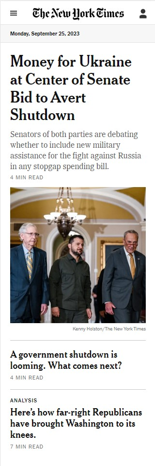
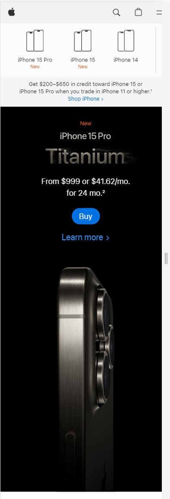

Visual Hierarchy

The New York Times uses visual hierarchy effectively. On their homepage, headlines are presented in larger, bold fonts to grab attention, while less important elements like navigation links are in smaller fonts. Images and captions also follow a clear hierarchy to lead readers through the content.
Hick's Law

Apple's product pages embody Hick's Law. They showcase a limited number of product options, making it easy for users to choose a model, color, or storage capacity. The simplicity of choice aligns with Hick's Law, reducing decision-making time.
White Space and Clean Design
Dropbox's homepage is an excellent example of clean design with effective use of white space. The page is uncluttered, with clear headers, icons, and minimal text. This simplicity not only looks elegant but also makes it easy for users to understand Dropbox's services.